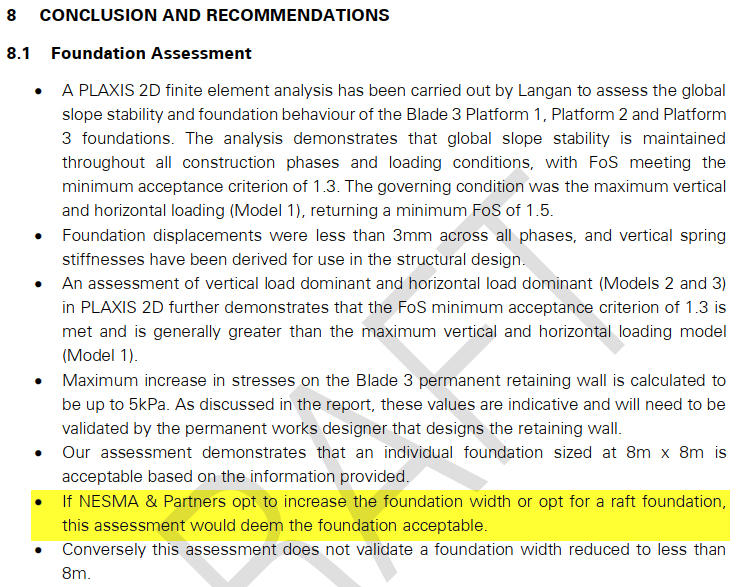

S.03 / Independent structural review
Concrete foundation verification
An independent review of the lower-level foundation design, its analysis assumptions, and the governing concrete and stability checks.
- MY ROLE
- Independent third-party reviewer
- DISCIPLINE
- Reinforced concrete / Foundations
- PERIOD
- July 2026
- ISSUE STATUS
- Technical review issued · Code A

The task
The foundation verification needed to address uncertainty in subgrade stiffness as well as tower reactions, bearing contact, stability, and reinforced-concrete demand.
My contribution
As the named third-party reviewer, I reviewed the submitted models, calculation results, and foundation checks. The review considered the bounded subgrade scenarios and the compression-only analysis alongside the stability and reinforcement checks.
What I delivered
- Review of the analysis basis and the submitted reaction and soil-pressure results.
- Verification of bearing, contact, sliding, flexure, one-way shear, and punching shear.
- A documented technical review report identifying the reviewed scope and its conclusion.
The result
The issued lower-foundation technical review records Code A for the design as submitted, with site verification required to confirm proper execution.
Role: design verification, rather than authorship of the submitted foundation and tower design. The Code A conclusion applies to the reviewed submission and its stated conditions.
